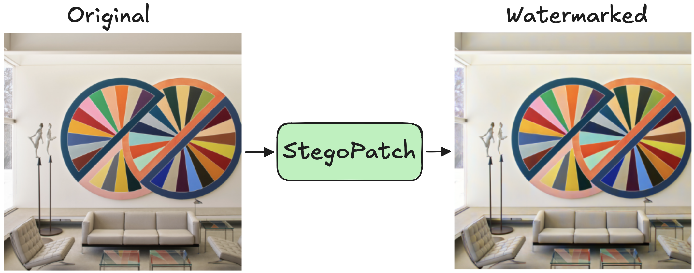

AI generated data is becoming harder and harder to tell apart from real world content. Watermarking refers to the process of embedding hidden messages into generated content so that those messages can later be recovered to verify the data's origin.
StegoPatch is an image watermarker that is virtually invisible to the human eye and is robust to common image manipulations like cropping, rotation, blur, and lossy compression. StegoPatch can be easily scaled to different image resolutions, even those different from what it was trained on. Our work builds on the work of Bui et al.2 and Tancik et al.3 to add robustness to spatial manipulations in existing image watermarkers.
StegoPatch trains two neural networks: a message encoder \(F_\theta\) and a secret decoder \(D_\varphi\). The message encoder takes advantage of a convolutional image autoencoder. Following Bui et al., we chose the VQGAN autoencoder4 for our purposes.
To encode a message \(m\) into an image \(c\), the image \(c\) is sent to its latent reprentation \(z\) using the image autoencoder. The latent variable \(z\) is split into discrete patches, each of which is watermarked using \(m\) and \(F_\theta\). The patches are stitched back together to form \(\tilde z\) before being sent back through the autoencoder to form the final watermarked image \(\tilde c\).
To decode a message from an image \(c\), we feed \(c\) through \(D_\varphi\), a modified ResNet-50 which outputs a predicted message.
More implementation details can be found here: TODO add link.
TODO
The most challenging part of building StegoPatch is ensuring robustness to JPEG compression. There is a tradeoff when training between the quality of the watermarker and the robustness to lossy compresion: more reliable watermarkers tend to have stronger artifacts like patches of discoloration in the watermarked image.
One way to possibly address this in the future is to more carefully choose where to place watermarked patches. Instead of periodically tiling the image with the message, one could choose places in the image where the watermark would be more hidden to place a stronger watermark. For example, the message encoder \(f_\theta\) could take in the cover image too as input to give it context for how much to watermark each patch, as in StegaStamp (Tancik et al.)3.
Watermarked images from our first experiment. Each row shows the original cover (left) and the watermarked version (right). The embedded message is mostly invisible; however some patches can still be seen, as with the plane (top) and the distorted faces (bottom).


Training curves from our first experiment, smoothed for readability (the faint lines show the raw, unsmoothed values). The run spans three sessions, which line up into one continuous trajectory. Note in particular that Bit accuracy crosses ~98%; the noise in bit accuracy comes from the variability in image transformation but with error correcting codes, message recovery is essentially lossless.